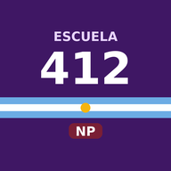

Fuera del aula 0
Asistencia 0
🎤 Anotar por voz o escribiendo
Tocá y decí: “Juan Pérez sale al baño” o “Juan Pérez regresó”.

NIVEL PRIMARIO
Configuración inicial del celular del docente
Se habilita sólo al escanear el QR institucional al llegar a la escuela. Se bloquea sola al cierre de la jornada o al retirarte.
Fotografiá sólo la pared o superficie: que no aparezcan personas. Si el escrito nombra a un alumno o adulto, no uses la IA: transcribilo a mano en Observaciones.
Al cerrar, la app genera el PDF, lo envía a la dirección, borra los datos del día y queda bloqueada hasta el próximo QR institucional.
Se guardan solos cuando termina cada clase: salidas y vueltas con su horario, y la asistencia del grado. Quedan acá aunque cierres la jornada.
🔠 Tamaño de la letra